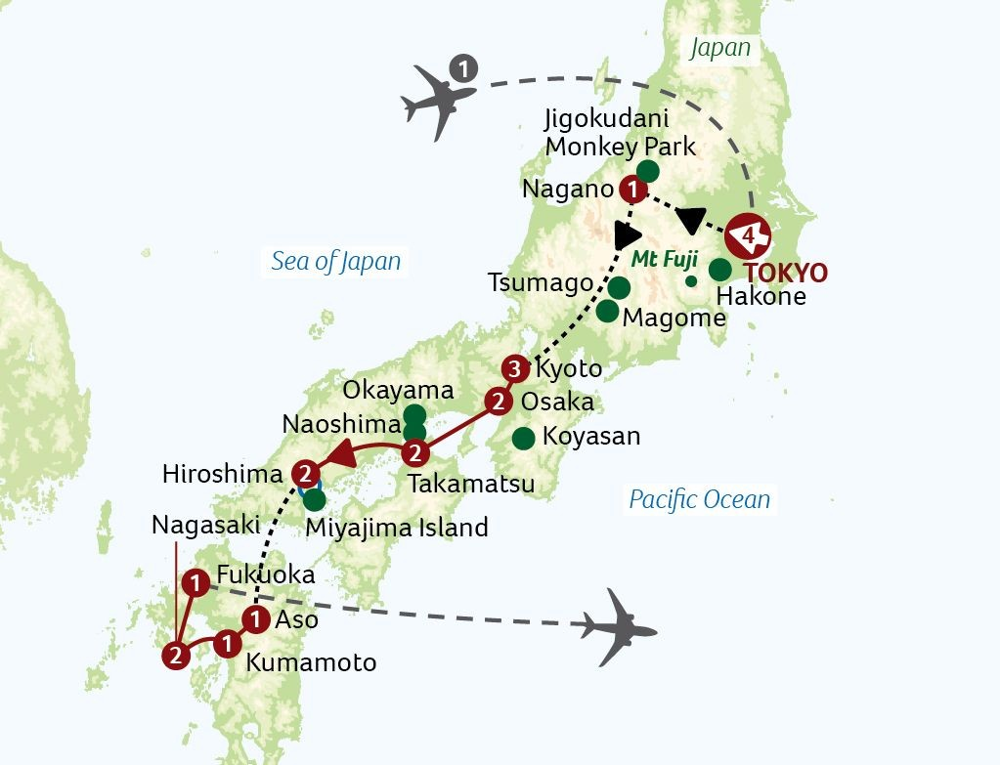

Grand Tour of Japan – Itinerary
Tour Map

Tour Highlights
- Experience vibrant city life in Tokyo and Osaka.
- Visit historic Kyoto, Hiroshima, and cultural landmarks.
- Enjoy Mount Fuji views, Lake Ashi cruise, and bullet train rides.
- Explore temples, shrines, and traditional markets.
Day-by-Day Itinerary
- Day 1: Depart from London to Tokyo.
- Day 2: Arrive in Tokyo, transfer to hotel, welcome dinner.
- Day 3-4: Tokyo sightseeing and free time.
- Day 5: Hakone, Mount Fuji views, Lake Ashi cruise.
- Day 6-7: Nagano, Jigokudani Monkey Park, Tsumago, Magome.
- Day 8-9: Kyoto temples and culture.
- Day 10-11: Hiroshima, Miyajima Island.
- Day 12-13: Takamatsu, Naoshima, Okayama.
- Day 14-15: Fukuoka, Aso, Kumamoto, and return flight.